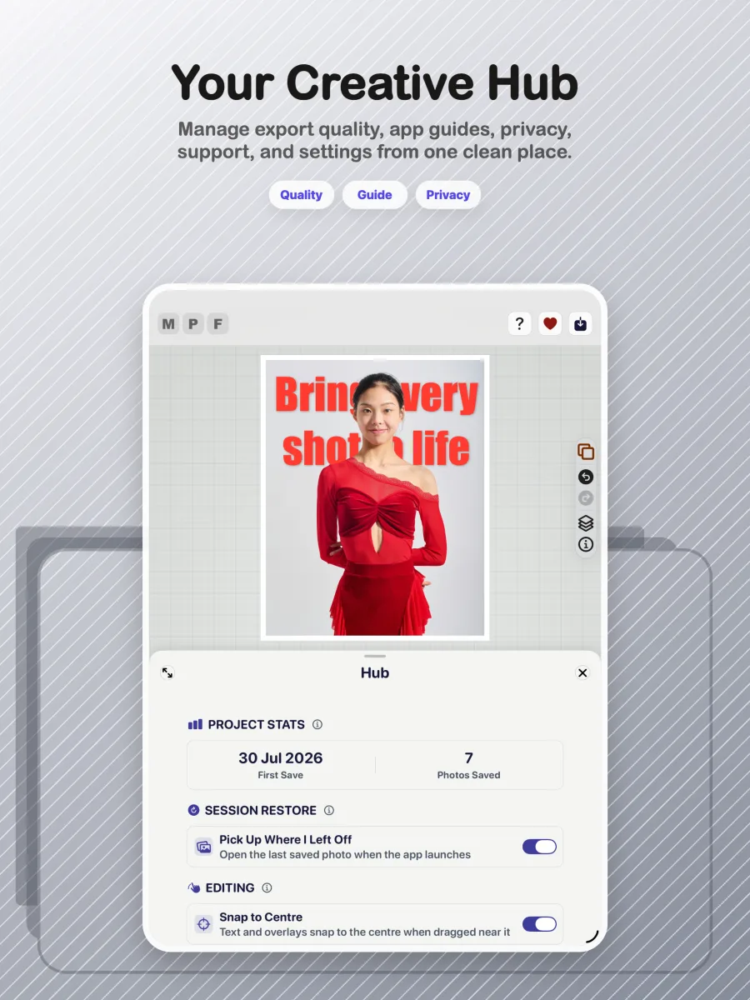

Experience
App shell, editor, canvas and inspectors
Present navigation and creative controls while reading state and raising user intent.
Every claim on these pages is meant to be verifiable. The app is organised as a flow of responsibilities, features trace to written requirements and tests, and anything a Simulator cannot prove is verified on a real device.
Views present the controls, state coordinates intent, the document preserves creative decisions, and dedicated services understand, render and deliver the pixels.

Present navigation and creative controls while reading state and raising user intent.
State flows down to the interface; controlled actions flow up through the intent system.
FrameDocument, FrameProfile, document layers and unified caption elements preserve creative intent.
Coordinate complete business processes without embedding policy inside views.
Understand the scene, refine masks and create scoped image products.
Turn one document contract into responsive preview pixels and high-resolution delivery pixels.
Recover work, persist reusable assets, protect metadata and deliver the finished creation.
Confirm that the responsibility model explains how the app is built without turning the BA view into a source-code inventory.
| Epic | Capability | Feature / requirement source | Evidence | Lifecycle |
|---|---|---|---|---|
| AI-assisted composition | Subject separation | Rendering requirements and AI pipeline audit | Mask pipeline tests plus device verification | Implemented |
| 3D Studio & parity | Subject overflow | 3D Pop and rendering requirements | Layout-engine tests and visual verification | Implemented |
| Creative text | Behind-subject caption | Caption requirements and unified text model | Caption/model tests plus canvas verification | Implemented |
| Dependable delivery | WYSIWYG export | Rendering requirements and offset specification | Geometry tests, parity traces and export verification | Implemented |
REQM Level 4 expects ownership of these activities for initiatives of medium size and complexity.
The practitioner helps choose an approach appropriate to the context rather than applying one method mechanically.
REQM Level 4 includes enabling effective input, testing assumptions and supporting prioritisation.
Requirements should have an agreed reference point from which controlled delivery and change can proceed.
Requirements must remain connected to their origin, delivered behaviour and evidence.
The broader SFIA Level 4 responsibility describes diverse complex work under general direction, supporting others and contributing expertise to team outcomes.
This page demonstrates how the project’s artefacts align with REQM Level 4. A formal SFIA assessment would also require evidence of the individual’s workplace autonomy, influence, complexity and behaviours.
Max Photo Frames is a SwiftUI-first iOS photo editor with a non-destructive document model and a strict preview-to-export parity goal.
SwiftUI, iOS 17 Observation with @Observable, a custom staged editor layout, Swift concurrency and a canvas-first interaction model.
Apple Vision foreground masks, Core Image compositing and filters, Photos/PhotosUI integration, skin smoothing and subject cutouts.
ExportInteractor, ExportManager, RenderService and layout math stay aligned with the live SwiftUI preview.
Reusable frame profiles, persisted media layers and a V5 document model keep editing flexible while protecting user work.
A small, readable sample of the work behind each release, not a private Git log.
Max Photo Frames launches on iPhone and iPad with its first photo-framing experience.
Photos with unknown dates gain safer fallbacks and smarter caption behaviour.
Automated comparison work protects the relationship between the live preview and the saved image.
Backup returns to the Hub and includes the saved caption library.
A full two-device test cycle hardens iCloud Sync and ensures an empty cloud answer can never delete a library.
The release notes, device verification and App Store materials are brought together for the Version 3.1 submission.
Repository snapshot: 2,129 first-parent commits on main, 2,891 commits across local refs, and 18 release or milestone tags. Commit count describes repository activity, not hours worked.
The app supports both the original workflow and the 3D Pop workflow. Testing focuses on memory management, caching, restoration, exporting and ensuring edits persist correctly across both paths.